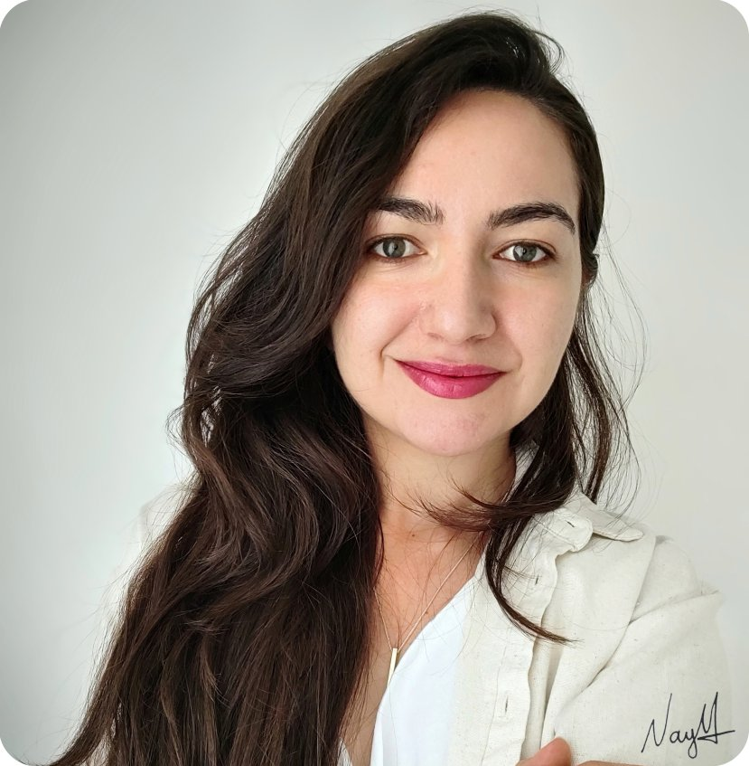
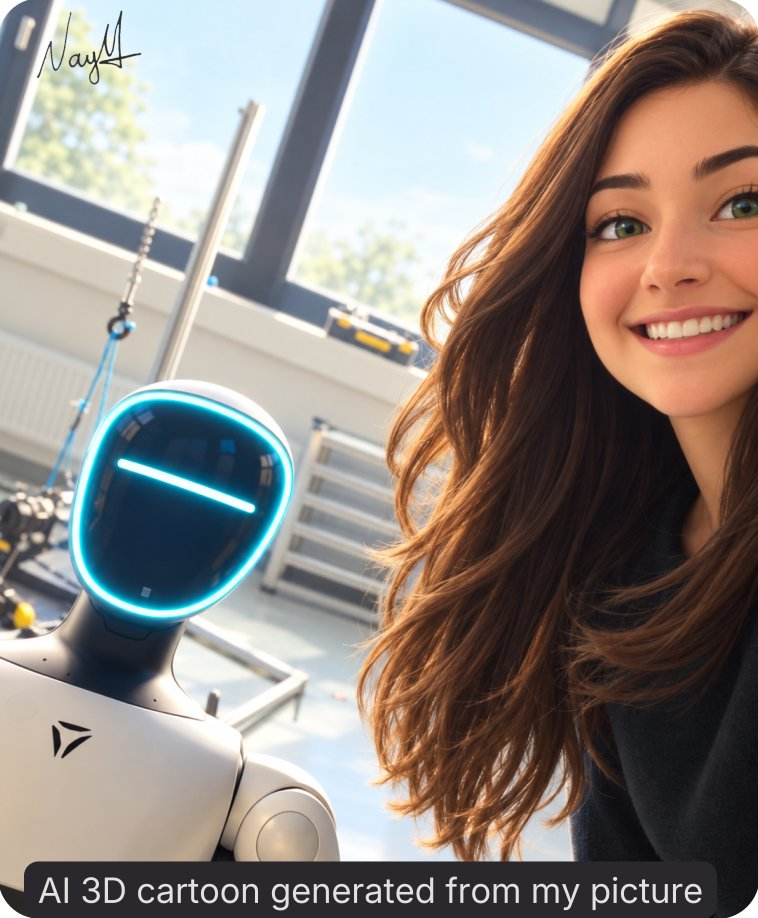
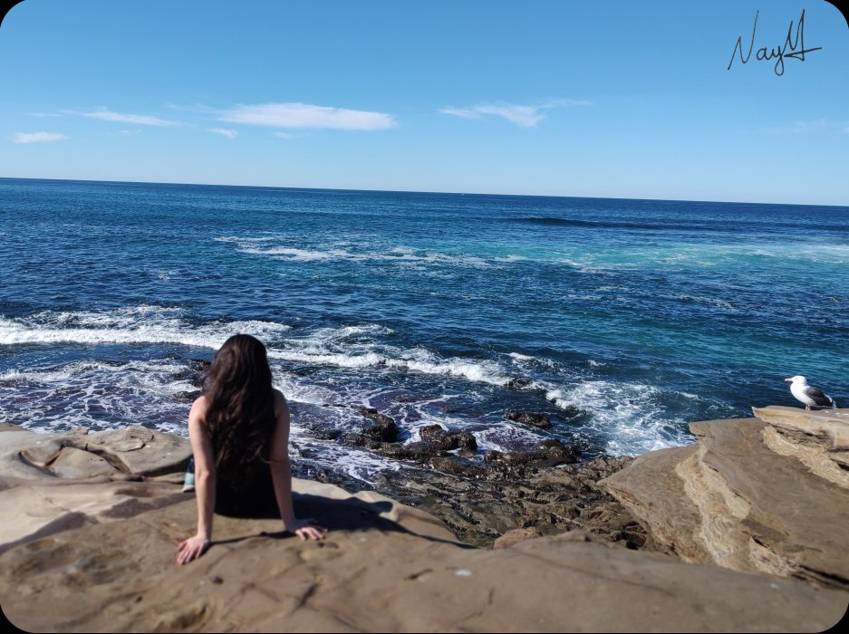
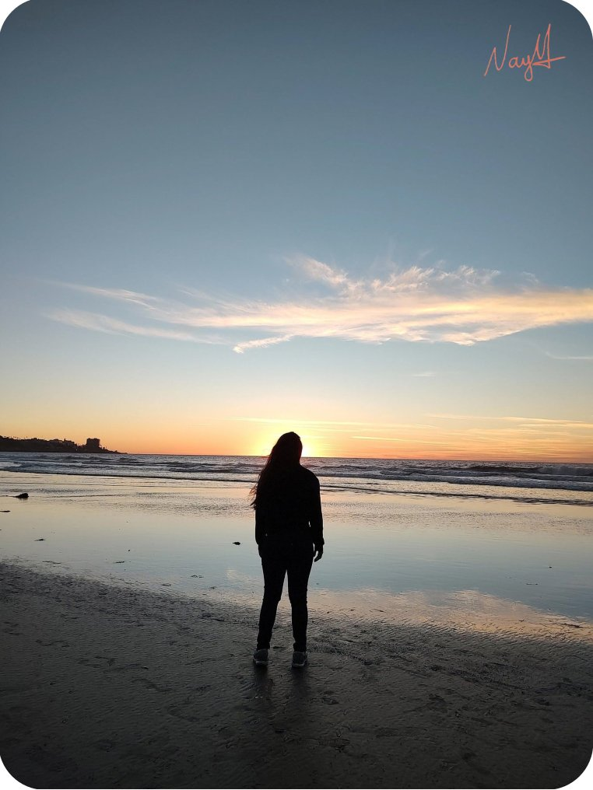

Nayari Marie
Lessa
Dr.-Ing candidate
ML & Robotics
Research Engineer


News.
-
December - NeurIPS 2026
Women in Machine Learning Workshop
Paper: When the Gait Slips: Retrieval-Conditioned Reflex Plasticity for Humanoid Fall Recovery
-
August - IJCAI 2026
1st Workshop on AI-Based Humanoid Robot Design and Control Through the Lens of HRI, Evolution, and Biomechanics
Paper: Monkey See, Robot Do? Goal-Directed Emulation as the Missing Link in Embodied Imitation Learning
-
June - ICRA 2026
IEEE International Conference on Robotics and Automation - Main track
Paper: Unlocking the Potential of Soft Actor-Critic for Imitation Learning

About Me.
Hi, I'm Nayari.
I'm a machine learning and robotics researcher working at the intersection of reinforcement learning, imitation learning, and robotics. I'm a Dr.-Ing. candidate at the University of Bremen, investigating bio-inspired imitation learning for dynamic legged robots.
Previously, I completed my M.Eng. in Electrical Engineering at São Paulo State University (Unesp) and a bachelor's degree in Electronics Engineering at Padre Anchieta University Center.
Currently, I am based in Germany, working as a Research Engineer and project lead at the Robotics Innovation Center DFKI GmbH and as a teaching assistant at the University of Bremen. Furthermore, I spent nearly a decade working as a civil servant at the Federal Institute of São Paulo (IFSP) in technical and academic leadership roles.
